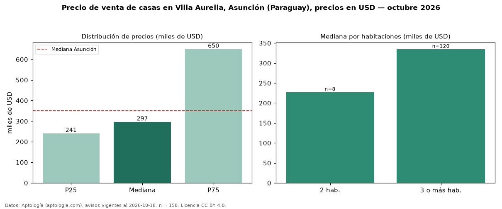

Precio de venta de casas en Villa Aurelia, Asunción (Paraguay), precios en USD — octubre 2026
USD 297.000 es el precio mediano de casas en venta en Villa Aurelia, Asunción (Paraguay) (n = 158 avisos). Frente a la mediana de Asunción para casas (USD 350.000), queda 15 % por debajo. Por metro cuadrado, la mediana es USD 1.283/m² (n = 115 avisos con área), 25 % por encima de Asunción (USD 1.028/m²). Con el precio por m² de alquiler del mismo segmento (USD 4,76/m² al mes), la rentabilidad bruta implícita es 4,5 % anual (aproximación con medianas de ofertas distintas). La mitad central de los avisos va de USD 241.250 a USD 650.000 (razón 2,7), una dispersión alta. El área mediana anunciada es 409 m². El segmento con más oferta es el de 3 o más habitaciones (120 avisos, mediana USD 335.000); pasar de 2 habitaciones a 3 o más habitaciones cambia la mediana +47 %. Por precio mediano es el puesto 20 de 34 barrios de Asunción con al menos 30 avisos de casas en venta (USD): en la franja media. Datos: Aptología (aptologia.com), CC BY 4.0 — https://www.aptologia.com/py/venta/asuncion. Archivos: PDF, CSV con las cifras y gráfica PNG.

| Avisos únicos | 158 |
|---|---|
| Percentil 25 | COP 241.250 |
| Mediana | COP 297.000 |
| Percentil 75 | COP 650.000 |
| Mediana por m² | COP 1.282 |
Fuente: avisos vigentes de portales inmobiliarios recopilados por Aptología, deduplicados (mínimo 30 avisos únicos por celda). Precios pedidos, no cerrados. Fecha: 2026-10-18.